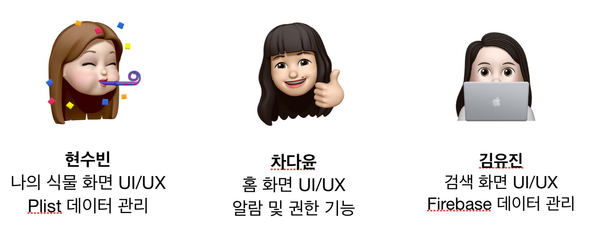

EasyPlant 에 대하여
EasyPlant는 많은 종류의 식물을 키우는 사람이나, 식물을 키우는데 미숙한 사람을 위해 자신의 식물 등록과 정보 검색, 식물 별 물주기 알람 기능을 제공해주는 앱입니다.
바쁜 일상 속 잊지 않고 식물의 건강을 지켜주기위한, EasyPlant
EasyPlant는 많은 종류의 식물을 키우는 사람이나, 식물을 키우는데 미숙한 사람을 위해 자신의 식물 등록과 정보 검색, 식물 별 물주기 알람 기능을 제공해주는 앱입니다.
언제 물을 줘야할지 헷갈린다구요? 자신이 설정한 컬러를 통해 다음 물 줄 날짜를 간편히 확인하세요!
총 7단계로 나뉘어지는 레벨을 통해 더 신나게 식물을 키워보세요! 식물이 행복해질수록 더 높은 수준의 농부가 될 수 있습니다.
식물에게 물을 줬다면 물 뿌리개를 클릭해서 물을 주었음을 기록하세요. 물을 꼬박꼬박 주면 내 식물은 더욱 행복해집니다.
인테리어, 공기정화, 귀차니즘 등 실용적인 카테고리 별로 그에 맞는 식물들을 검색하고 나와 함께할 식물을 골라보아요.
다양한 종류의 식물에 대해 물 주기, 햇빛의 양 등 식물 양육에 필수적인 정보를 얻을 수 있습니다. 처음 키우는 분들도 반려식물 키우기에 도전해보세요!
여러분의 반려식물들을 다양한 정보와 함께 보기 쉽게 알려드릴게요. 추가 수정 삭제기능까지 easy하게!
여러분의 반려식물과의 소중한 추억들을 남겨보세요. EasyPlant가 여러분의 기억을 남겨드리도록 도와드리겠습니다!
여러분의 반려식물들과의 추억을 오래오래 기억하도록 EasyPlant가 기억해드릴게요.
